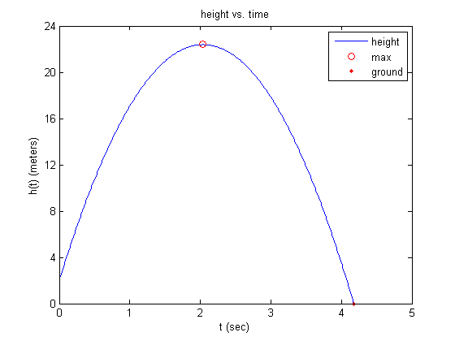
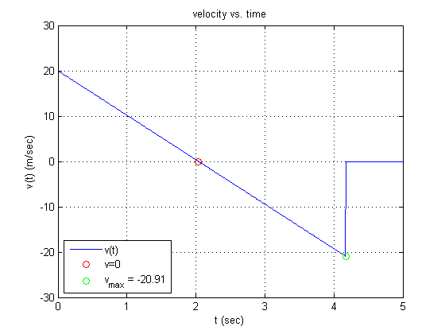

Corentin Rejaud, Recitation Section 1, Week 5&6
Contents
Problem 1
Part B
h0 = 2; v0 = 20; t = 0:0.01:5; h = height(t,h0,v0); v(h<0) = 0; h(h<0) = 0; figure(1); plot(t, h, 'b-'); hold on; % Part C [Hmax1, Tindex] = max(h); Tmax1 = t(Tindex); Tmax2 = fminbnd(@(t)-height(t,h0,v0),1,3); Hmax2 = height(Tmax2,h0,v0); plot(Tmax2,Hmax2,'ro'); % Part D Tg = fzero(@(t) height(t,h0,v0), 4); plot(Tg, 0, 'r.'); legend('height', 'max', 'ground', 'location', 'ne'); xlim([0,5]); ylim([0,24]); xlabel('t (sec)'); ylabel('h(t) (meters)'); title('height vs. time'); set(gca,'xtick',[0:1:5]); set(gca,'ytick',[0:4:24]); % Part E hold off; figure(2); [h,v] = height(t,h0,v0); v(h<0) = 0; plot(t,v,'b-'); hold on; title('velocity vs. time'); xlabel('t (sec)'); ylabel('v(t) (m/sec)'); xlim([0,5]); ylim([-30,30]); set(gca,'xtick',[0:1:5]); set(gca,'ytick',[-30:10:30]); plot(Tmax2, 0, 'ro'); Vg = min(v); plot(Tg, Vg, 'go'); T = ['v_{max} = ', num2str(Vg, '%3.2f')]; legend('v(t)', 'v=0', T, 'location', 'sw'); grid on; hold off; 
Problem 2
Part A
fp = fopen('rec0506.dat'); fgetl(fp); fgetl(fp); D = fscanf(fp, '%*s %*s %f %f %f %*s'); D = reshape(D,3,7)'; av1 = mean(D(:,1)); av2 = mean(D(:,2)); av3 = mean(D(:,3)); AVE = mean(D,2); av4 = mean(AVE); frewind(fp); L1 = fgetl(fp); L2 = fgetl(fp); S = textscan(fp, '%s %s %*f %*f %*f %*s'); N = S{1}; I = S{2}; fclose all; [Ds, i] = sortrows(D,-1); Ds = Ds([2,1,3,4,5,6,7],:); i = i([2,1,3,4,5,6,7],:); Ns = N(i); Is = I(i); AVEs = AVE(i); Ds1 = Ds(:,1); Ds2 = Ds(:,2); Ds3 = Ds(:,3); fp = fopen('rec0506b.dat', 'w'); fprintf(fp,[L1, '\n']); fprintf(fp,[L2, '\n']); for i=1:7, fprintf(fp, '%-13s %3.0f %3.0f %3.0f | %5.2f\n', [Ns{i}, ' ',Is{i}], Ds1(i), Ds2(i), Ds3(i), AVEs(i)); end fprintf(fp,[L2, '\n']); fprintf(fp, ' exam_AV %5.2f %5.2f %5.2f | %5.2f\n', av1, av2, av3, av4);